Using the app¶
Main screen¶
The main screen shows the radio at a glance. Most items are also buttons: tap them to change the radio.
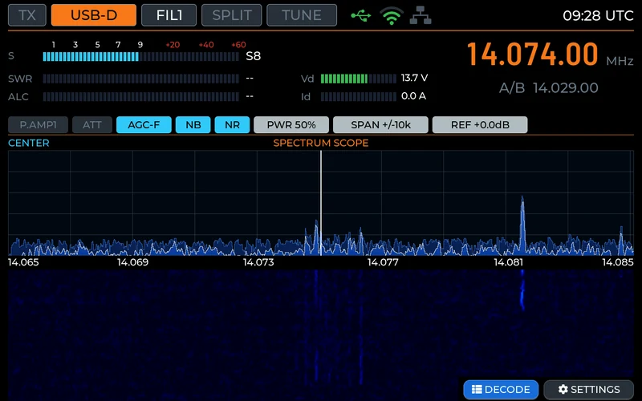
Top bar¶
| Item | Shows | Tap to |
|---|---|---|
| TX | Red while the radio transmits. | — |
| Mode (for example USB-D) | The radio's mode. -D means data mode is on. | Open the mode panel. |
| FIL1 / FIL2 / FIL3 | The selected filter. | Open the mode panel. |
| SPLIT | Amber while split is on. | Switch split on or off. |
| TUNE | Green while the antenna tuner is on; TUNING while it tunes. | Tap: tuner on or off. Touch and hold: start a tune (the radio transmits a carrier). |
| USB icon | Green: the radio is answering. Red: no radio or no CI-V reply. | — |
| WiFi icon | Signal strength of the WiFi link. | — |
| Network icon | Only shown when the network radio server is on. Grey: waiting. Blue: a client is connected. Red: the network is keying the radio. | — |
| Clock | UTC, set from the internet. Shows --:-- until the clock is known. |
— |
Meters and frequency¶
| Item | Shows | Tap to |
|---|---|---|
| S | Signal strength, S1 to S9+60. Becomes Po (output power) while transmitting. | — |
| SWR, ALC | Transmit meters. | — |
| Vd, Id | The radio's supply voltage and drain current. | — |
| Frequency | The main VFO frequency in MHz. | Open the band panel. |
| A/B | The other VFO's frequency. | Swap VFO A and B. |
Function chips¶
| Chip | Tap to |
|---|---|
| P.AMP1 / P.AMP2 | Step the preamp: off → P.AMP1 → P.AMP2 → off. (IC-9700 and IC-905: one preamp.) |
| ATT | Attenuator on or off (20 dB; 10 dB on the IC-9700 and IC-905). |
| AGC-F / AGC-M / AGC-S | Step the AGC: fast → mid → slow. |
| NB | Noise blanker on or off. |
| NR | Noise reduction on or off. |
| PWR | Shows the RF power setting. Display only. |
| SPAN | Shows the scope span. Display only. |
| REF | Shows the scope reference level. Display only. |
A blue chip is on; a grey chip is off.
Spectrum scope and waterfall¶
The scope shows the radio's own spectrum data. CENTER or FIX at the top left is the radio's scope mode. The white line marks the operating frequency.
Tap the spectrum or the waterfall to tune there (in 100 Hz steps).
The DECODE button opens the decode screen and SETTINGS opens Settings.
Meter faces¶
There are three meter faces. Swipe left or right over the meter area (between the two orange lines) to switch. Choose the face shown at start-up in Settings → Display → Main screen face at start-up.
| Face | Look |
|---|---|
| Bars | Bar meters for S, SWR, ALC, Vd and Id (picture above). |
| Analog | A dark dial with one needle: S on receive, Po on transmit. |
| Vintage | The same dial with a warm, back-lit look. |
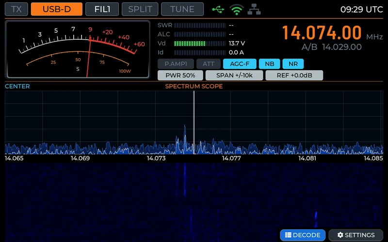
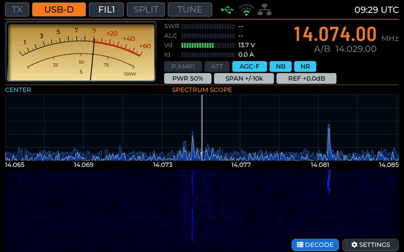
Band, mode and frequency panels¶
A panel opens over the meters. Tap anywhere else to close it; it also closes after 10 seconds without a touch.
Band¶
Tap the frequency to open the band panel.
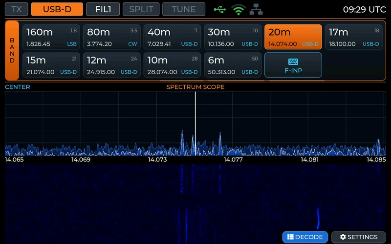
Each button shows the band, the frequency and the mode you will go to. The HUD remembers the last frequency and mode you used on each band. For bands you have not used since power-on, it reads the radio's band stacking register. Only the bands your radio model has are shown.
Tap F-INP to type a frequency.
Frequency keypad (F-INP)¶
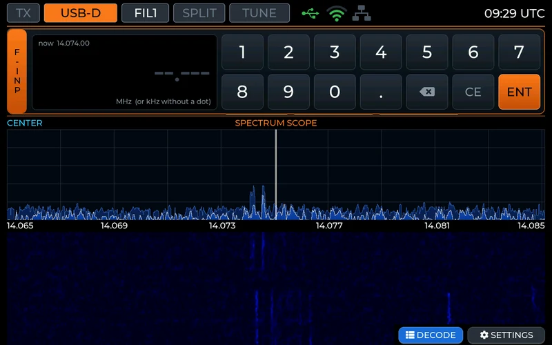
- Type the frequency. With a decimal point it is in MHz (
14.074); without one it is in kHz (14074). - Tap ENT to tune. ⌫ deletes one digit; CE clears the entry.
The now line shows the current frequency. Frequencies outside 30 kHz to 11 GHz show out of range.
Mode and filter¶
Tap the mode or filter badge to open the mode panel.
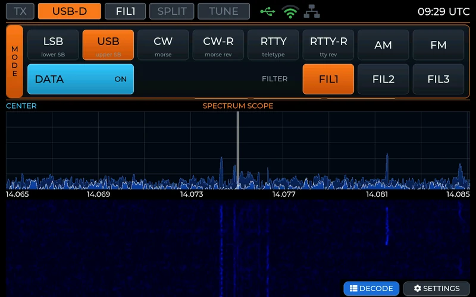
| Button | Does |
|---|---|
| LSB, USB, CW, CW-R, RTTY, RTTY-R, AM, FM | Set the mode. |
| DATA | Data mode on or off (for example USB → USB-D). |
| FIL1, FIL2, FIL3 | Select the filter. |
Decode screen¶
Tap DECODE on the main screen. The decoder uses the radio's USB receive audio. Tap HUD to go back and Clear to empty the list.
Choose the mode with the buttons along the top: FT8, FT4, RTTY and CW. Greyed-out modes (JT65, JT9, WSPR, Q65, FST4, MSK144) are not available yet. The HUD remembers the last mode.
Decoding needs a licence or the trial. Without one, it runs for 2 minutes after each power-on, then shows Preview ended.
FT8 and FT4¶
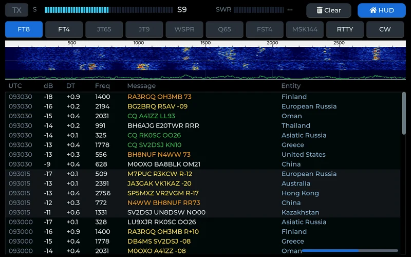
The waterfall shows the audio passband (0 to about 3000 Hz). Each decode cycle adds lines to the list:
| Column | Shows |
|---|---|
| UTC | Start time of the cycle. |
| dB | Signal-to-noise ratio. |
| DT | Time offset in seconds. |
| Freq | Audio frequency in Hz. |
| Message | The decoded message. |
| Entity | The DXCC country of the sending station. |
Messages are coloured: green for CQ calls, yellow for signal reports, orange for 73 and RR73. Messages with your own call sign (set in Settings → Station) are highlighted.
FT8 and FT4 need the correct time. The HUD sets its clock from the internet over WiFi.
CW¶
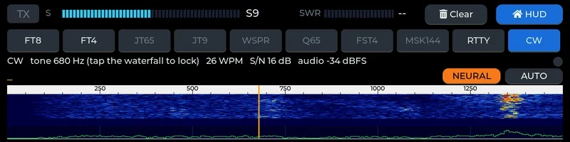
The status line shows the tone frequency, the speed in WPM, the signal-to-noise ratio and the audio level. The decoder follows the strongest signal near the radio's CW pitch.
- Tap the waterfall on a signal to lock the decoder to that tone.
- Tap AUTO to unlock it again.
- NEURAL / CLASSIC switches between the two CW decoders. NEURAL gives far less junk text from noise; CLASSIC is the traditional decoder. Both do well on clean signals.
RTTY¶
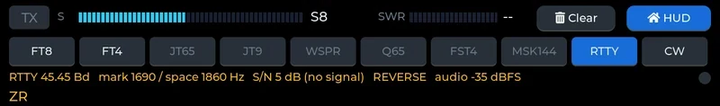
The status line shows the speed (45.45 Bd), the mark and space tones, the signal-to-noise ratio, REVERSE when the radio is in RTTY-R, and the audio level. Tune the signal onto the mark and space tones shown.
Settings¶
Tap SETTINGS on the main screen. The tabs are on the left. Info opens the Info screen and HUD goes back to the main screen. Settings are saved in the HUD and kept after power-off.
| Tab | Use it to |
|---|---|
| WiFi | Connect to your WiFi. See Getting started. |
| Station | Set your own call sign. |
| Radio | Choose the radio and set up the network radio server. See Setup. |
| Display | Backlight, scope colours, meter face, touch calibration. |
| Licence | Activate a licence or start the trial. See Getting started. |
| Status | Check WiFi, USB, CI-V and firmware. See Troubleshooting. |
Station¶
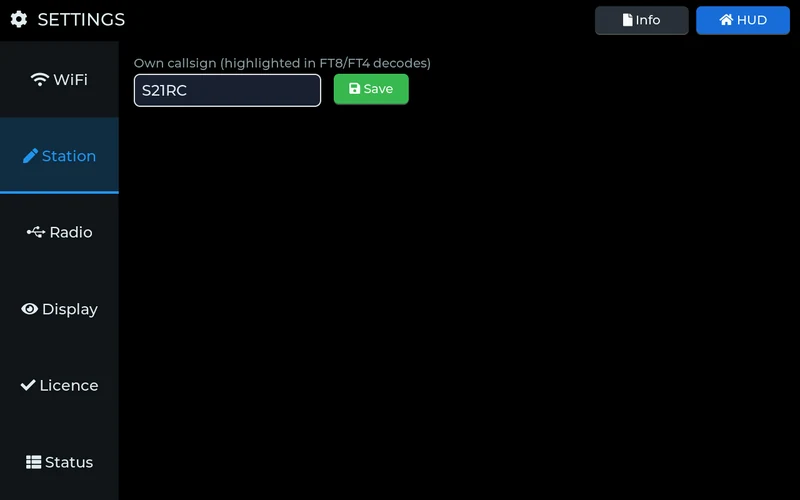
Type your call sign in Own callsign and tap Save. Allowed characters are
A–Z, 0–9 and /. FT8 and FT4 messages with your call sign are highlighted.
Display¶
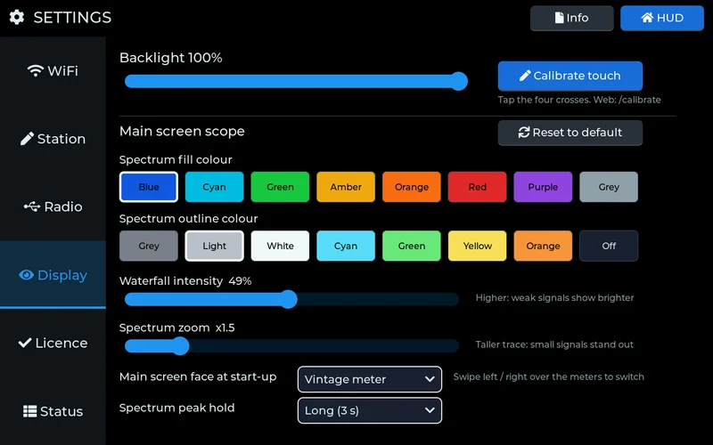
| Setting | What it does |
|---|---|
| Backlight | Screen brightness. |
| Calibrate touch | Starts the touch calibration (see below). |
| Spectrum fill colour | Colour under the spectrum trace: Blue, Cyan, Green, Amber, Orange, Red, Purple or Grey. |
| Spectrum outline colour | Colour of the trace line: Grey, Light, White, Cyan, Green, Yellow, Orange, or Off. |
| Waterfall intensity | Higher makes weak signals brighter in the waterfall. 50 % is neutral. |
| Spectrum zoom | ×1.0 to ×4.0. A taller trace makes small signals stand out. |
| Main screen face at start-up | Bars, Analog or Vintage meter. |
| Spectrum peak hold | Off, Short (1 s) or Long (3 s). |
| Reset to default | Puts the scope settings back to the factory values. |
Touch calibration¶
Touch works out of the box. If touches land in the wrong place, calibrate:
- Tap Settings → Display → Calibrate touch, or open
http://helixrf-hud.local/calibratein a browser. - A cross appears in each corner in turn. Tap and hold the centre of the cross briefly, four times.
If nothing is touched for 45 seconds, the calibration is cancelled and the old settings stay.
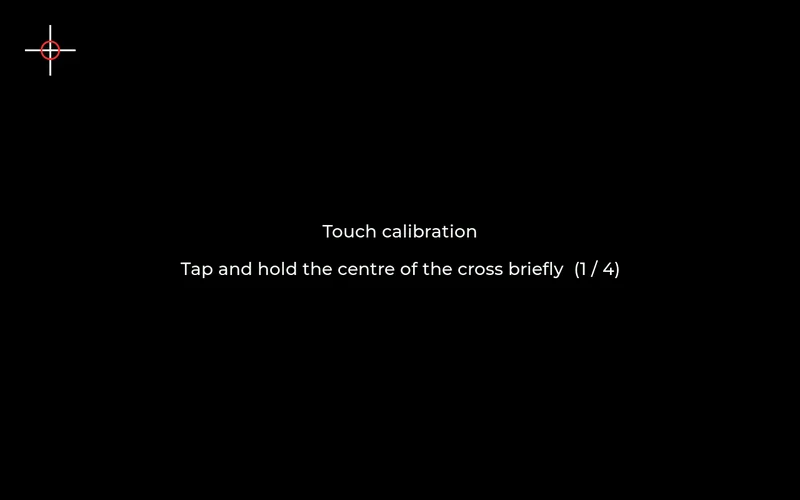
Status¶
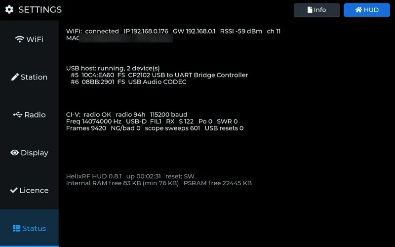
| Section | Shows |
|---|---|
| WiFi | Connection, IP address, gateway, signal (RSSI), channel, MAC address, and whether the clock is synchronised (NTP synced). |
| USB host | The USB devices found. An IC-7300 shows two: the CP2102 USB-to-UART bridge (CI-V) and the USB Audio CODEC. |
| CI-V | Link state, radio address, baud rate, frequency, mode and meter values, frame counters and USB resets (automatic reconnects). |
| Firmware | Version, uptime, reason for the last restart, and free memory. |
Info screen¶
Tap Info in Settings.
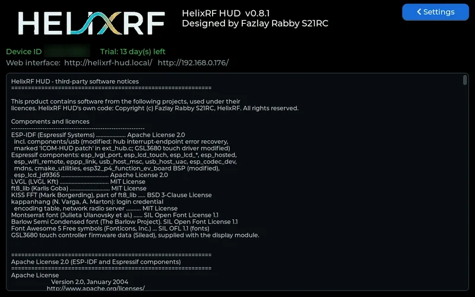
It shows the firmware version, the Device ID and licence state, the web interface addresses, and the third-party software notices. Tap Settings to go back.
Web interface¶
Open http://helixrf-hud.local/ (or the HUD's IP address) in a browser on the same network. The menu at the top has Live, Home, Settings, Licence, Info and Firmware.
Live¶
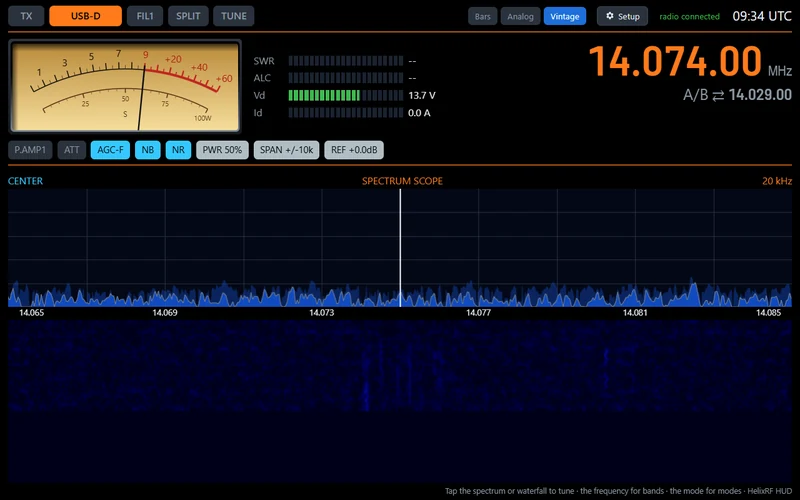
The Live page mirrors the main screen in your browser, and you can work it the same way:
- Tap or click the spectrum or waterfall to tune.
- Click the frequency for the band panel, and the mode for the mode panel.
- Click P.AMP, ATT, AGC, NB or NR to switch them.
- Bars, Analog and Vintage choose the meter face in the browser.
- Setup opens the other web pages.
The status text next to Setup shows radio connected, or HUD offline - reconnecting... when the link drops. Up to two browsers can show the Live page at the same time. Needs a licence or the trial; without one it runs for 2 minutes after each power-on.
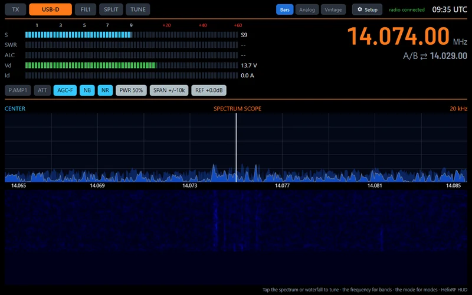
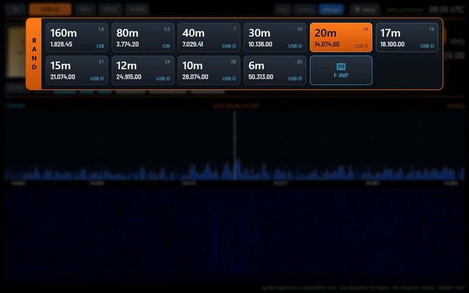
The page also works on a phone or tablet; on a narrow screen the parts stack vertically.
Home¶
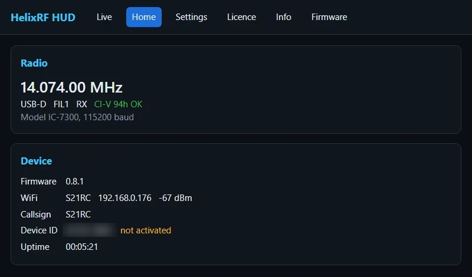
Radio shows the frequency, mode, filter, receive or transmit, and whether CI-V is working. Device shows the firmware version, WiFi, call sign, Device ID with the licence state, and uptime.
Settings¶
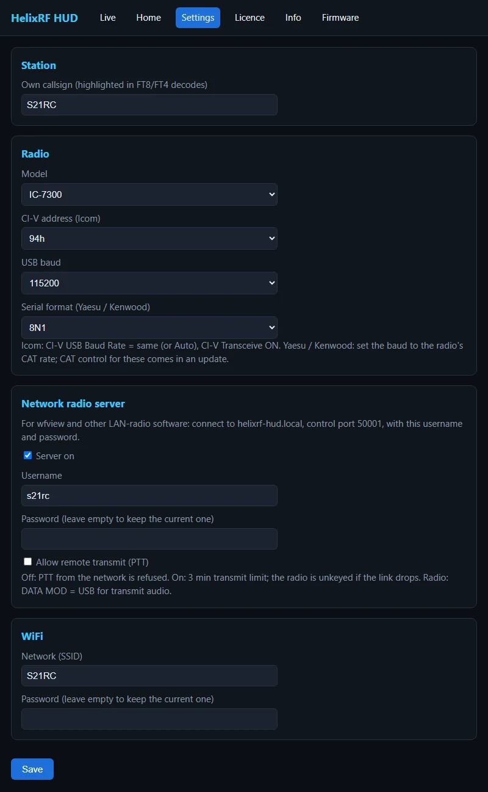
The same settings as on the screen, in four sections: Station, Radio, Network radio server and WiFi. Change what you need and click Save at the bottom. Leave a password field empty to keep the current password.
Licence, Info and Firmware¶
- Licence: Device ID, status, and the activation code field. See Getting started.
- Info: firmware version, Device ID and the open-source licences.
- Firmware: install a new firmware file. See Getting started.
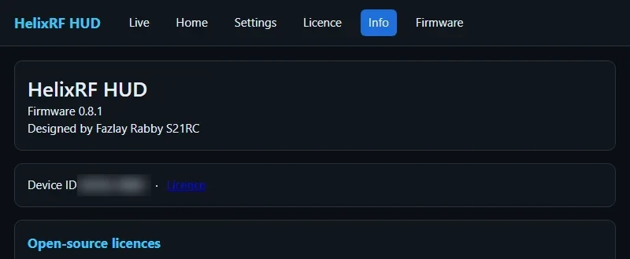
Keyboard shortcuts¶
In the web interface, while the frequency keypad is open:
| Key | Does |
|---|---|
| 0 to 9, . | Type the frequency. |
| Enter | Tune (ENT). |
| Backspace | Delete one digit. |
| Delete | Clear the entry (CE). |
| Esc | Close the panel. |